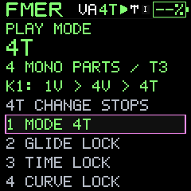
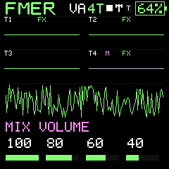

Reference
Capacity and qualification
Know the current boundaries before planning a set or deployment.
- Four qualified simultaneous local voices; four mono sequencer tracks.
- Sixteen shared patterns of up to 64 steps; sixteen on-device project destinations.
- 128 instrument slots: 64 DEFAULT and 64 USER, either engine in either editable bank.
- One shared effects chain with per-track routing; no four independent reverb processors.
- One USB master audio stream; no four-track audio stems.
- No independent on-device project-name field or individual slot-delete command in firmware 734.
- PC Catalog: up to 512 items and 10 MiB including retained Undo data.
- Windows device backend is the tested target. macOS/Linux transport and packaging are pending.
- Firmware packages must be reviewed; different starting applications are accepted on the supported layout after calibration and preservation checks. Unsupported layouts and damaged bootloaders require separate recovery.
The prior heavy four-part/all-effects hardware test reached 2,205 microseconds against a 2,176-microsecond reserve target. The combined-load timing reserve is not qualified. A 180-second USB recording stayed continuous but added 15 underruns. Screen tearing, battery calibration, wider DAW interoperability and power-loss storage qualification remain open. FMER does not claim complete stock/Baud or exact DX7 parity.
This companion pass changes host software and documentation. Simulated device tests can verify request validation, ordering and error handling, but do not requalify firmware timing or prove a new physical transfer. The owner can continue testing the installed unit while local app testing proceeds independently.
Estimated battery percentage
The header shows a percentage in a battery outline. This remains an estimate: the ADC curve is provisional, not a calibrated fuel gauge or remaining-hours prediction. It uses Test01 charging/discharge observations and older stock bar thresholds as priors. Voltage sag, charging, battery age and other units can change accuracy. No automatic shutdown is controlled by this estimate.
128 raw/filtered samples are retained in RAM every five minutes, plus USB bus-state changes: about ten hours under stable bus conditions. Reconnect and download battery history before powering off. USB bus activity is not charging current. The previous 722 enumeration flag could stay set while unplugged; do not use it to classify that history as charging. A full normal discharge and independently measured battery voltage remain useful for calibration.
729 battery percentage remains an estimate. The retained charging curve supports a full endpoint near ADC632, but power-off lost the discharge history. The header cannot sense headphone/TRS insertion, speaker selection or Bluetooth. USB shows bus status and actual audio streaming; I/U/T names the selected clock source, not a detected cable.
729 uses a conservative usable-empty estimate near ADC520 after reported load instability near the older14percent display. The restarted unit measured522-525; the incident itself was not logged across reboot. This is not a calibrated electrical cutoff. Sustained low readings update downward faster to avoid minutes of display lag. No charging or automatic shutdown behavior changed.
730 adds32 song entries per lane with1..32 repeats and-24..+24 semitone transpose. Rest entries last16 steps. The companion preserves complete song data in projects and backups; song editing and audition use the unit, not the host sound audition engine. Four-track HOME mini-scopes monitor real instrument PCM before track faders/FX; the large trace is the final mix.
Bluetooth status
USB direct MIDI is implemented. Bluetooth remains an offline transport implementation awaiting the real radio scheduler, interrupts, allocator and GATT integration. 734 does not provide Bluetooth pairing, group radio sync or Bluetooth audio. Complete radio memory use and timing have not yet been measured.
Portable companion
The Windows x64 package includes its runtime, host renderer, original defaults and illustrated help. It has no Python or cloud-service prerequisite. A modern browser is required. The included installer accepts differing application code on the supported memory layout while verifying the configuration and calibration regions it must preserve. Both stock and FMER staging locations are supported. The guarded V15/FMER path was physically exercised on Amethyst and Citrine in the733.4/733.5 cycle; this does not establish all hardware/firmware compatibility. Other layouts and damaged bootloaders need separate recovery. Bluetooth is deferred.

